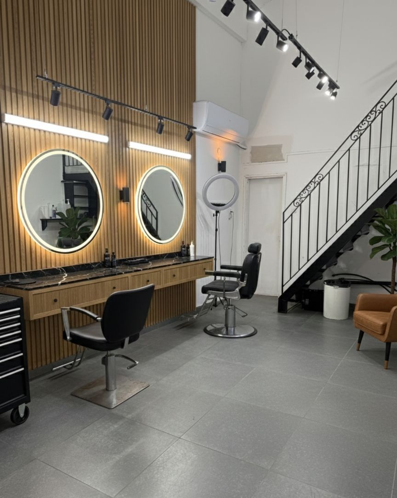
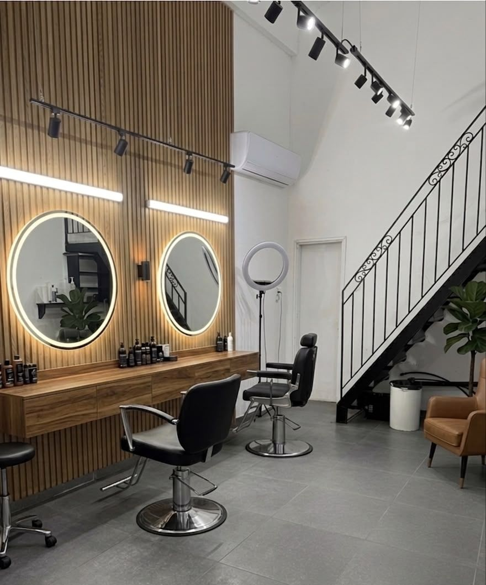

צבע וגווניםColour and highlights
געו בגוון כדי להרים אותו מהמניפה.Touch a shade to lift it from the fan.
קונספט לדוגמה שנבנה עבור Moti medina מספרה · זה אינו האתר הרשמי של העסקA sample concept built for Moti medina hair salon · This is not the business’s official website
צבע, עיצוב ותספורת, בקריית מוצקין.Colour, styling and cuts, in Kiryat Motzkin.
Moti medina מספרה: מספרה לנשים ולגברים בשדרות משה גושן 29.Moti medina מספרה: a hair salon for women and men at 29 Moshe Goshen Blvd.

שלוש המילים שעל הלוגו של מוטי, וכל מה שביניהן: גוונים, החלקות ושיער מתולתל.The three words on Moti’s logo, and everything in between: highlights, smoothing and curly hair.
“מוטי מקצוען אמיתי.קשוב לכל בקשה ויורד לפרטי הכי קטנים.”
“Moti is a true professional. He listens to every request and gets into the smallest details.”
לנשים ולגברים, מתספורת קצרה ועד צבע מלא.For women and men, from a short cut to a full colour.
געו בגוון כדי להרים אותו מהמניפה.Touch a shade to lift it from the fan.
שני כיוונים לאותו שיער.Two directions for the same hair.
לנשים ולגברים. געו כדי לגזור.For women and men. Tap to snip.
ראשון, שלישי–חמישי 9:30–19:00
שני 9:30–14:00 · שישי 9:00–14:00Sun, Tue–Thu 9:30–19:00
Mon 9:30–14:00 · Fri 9:00–14:00

עץ, אור חם ושתי מראות עגולות, בשדרות משה גושן 29.Wood, warm light and two round mirrors, at 29 Moshe Goshen Blvd.
תמונה: Moti medina מספרה, Google MapsPhoto: Moti medina hair salon, Google Mapsמספרה ברמה גבוהה.מוטי מקצוען אמיתי.קשוב לכל בקשה ויורד לפרטי הכי קטנים.האווירה במספרה נעימה נקייה ומזמינה .השירות תמיד אדיב וחם.ממליצה לכל מי שמחפשת עבודה מדוייקת ומקצועית!
A high-level salon. Moti is a true professional. He listens to every request and gets into the smallest details. The atmosphere in the salon is pleasant, clean and inviting. The service is always kind and warm. I recommend it to anyone looking for precise, professional work!
אני כבר 4 שנים אצל מוטי מסתפרת, עושה צבע ורק הוא היחיד שמטפל בשיער שלי. … ובתור מתולתלת אין כיף כמו לדעת שיש ספר מקצועי שיודע מה הוא עושה! ממליצה עליו בחום!
I’ve been having my hair cut at Moti’s for 4 years, I get my colour done there, and he’s the only one who looks after my hair. … And as someone with curls, there’s nothing like knowing there’s a professional hairdresser who knows what he’s doing! Warmly recommended!
מסתפרת אצלו שנים, אלוף בצבע, גוונים ותספורות ובן אדם מקסים וישר. מאד ממליצה
I’ve had my hair done by him for years: a champion of colour, highlights and cuts, and a lovely, honest person. Highly recommended.
לא, זו מספרה לנשים ולגברים.No, it’s a salon for women and men.
בטלפון 054-203-5688 או בהודעת וואטסאפ למוטי.Call 054-203-5688 or send Moti a WhatsApp message.
בשני 9:30–14:00, בשישי 9:00–14:00. בשבת סגור.Monday 9:30–14:00, Friday 9:00–14:00. Closed on Saturday.